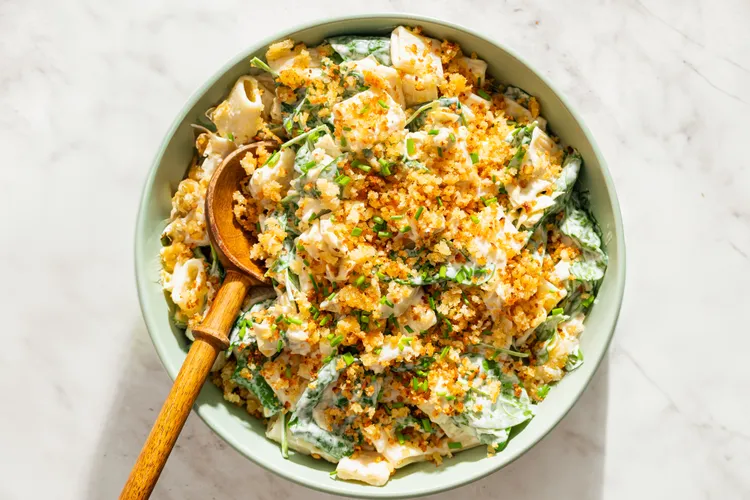

Spinach Artichoke Pasta Salad
-> Home

Ingredients
- 1 pound short pasta (such as penne, rigatoni, or macaroni)
- 2 (12-ounce) jars marinated artichoke hearts
- 1 cup (2 ounces) freshly grated parmesan cheese, divided
- 1/2 cup panko breadcrumbs
- 2 tablespoons unsalted butter
- 3/4 cup whole-milk Greek yogurt or sour cream
- 3/4 cup mayonnaise
- 1 small lemon
- 1 teaspoon kosher salt, plus more for pasta water and to taste
- 1/2 teaspoon freshly ground black pepper, plus more to taste
- 5 ounces baby spinach
- 1/4 cup minced chives, for garnish, optional
Steps
- Cook the pasta: Bring a large pot of heavily salted water to a boil over high heat. Cook the pasta until it’s just shy of al dente, about 2 minutes less than the package directions.
- Meanwhile, prep the artichokes: While the water is coming up to a boil, drain the marinated artichokes, reserving 1/4 cup of the oil. Chop the artichokes; you should have about 2 heaping cups. Set aside.
- Make the panko parmesan crumb:
While the pasta is cooking, add 1/2 cup of the parmesan and the panko to a small sauté pan and stir to combine. Cook over medium-low heat until the cheese begins to melt and the bread crumbs toast, about 2 minutes. Add the butter and continue to cook, stirring occasionally and letting the panko absorb the butter and the parmesan to dry out slightly, 2 to 3 minutes.
Remove the mixture from the pan and transfer to a small bowl to cool down. The mixture will have a slightly lacy consistency and some cheese clumps, which can just be broken up when ready to use.
- Drain and toss the pasta: Drain the pasta and transfer it to a large serving bowl. Add the reserved 1/4 cup of artichoke oil and toss to coat. Allow to cool for about 5 minutes.